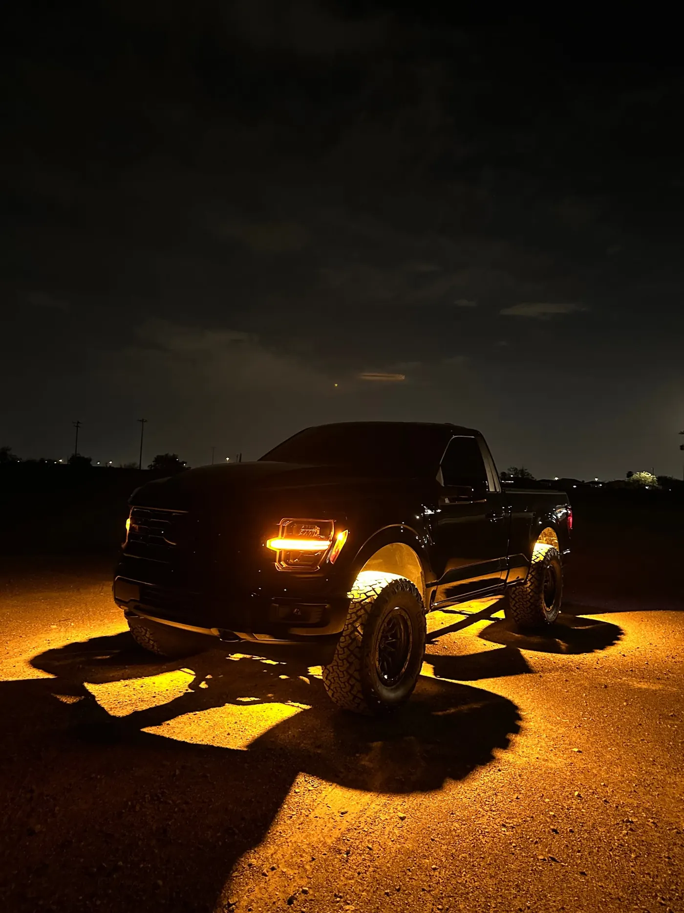

Plug And Play
RGBW Rock Light Kit
- 44 LED Chip
- RGBW
- Bluetooth App
$205 to $705 4 to 20 lights
Phoenix, AZ · Installed In Mesa
Our shop is in Mesa, east of Phoenix on the US-60 and the Loop 202. Phoenix drivers book a drop-off and pick the truck up lit, or order a kit and we ship it anywhere in the Valley.
5.0★ from 33 reviews · installed in Mesa · kits ship anywhere

Phoenix has plenty of shops that add lighting to a list of audio, tint and accessories. We make our own rock lights and wheel lights and install them, so the people wiring your truck know the product down to the chip count, and every install gets the same fused, sealed, tested-at-pickup standard.
That's also why our reviews read the way they do: 5.0 stars from 33 reviews, from customers who installed our lights themselves, had their own installer do it, or brought the truck to us.
Take the US-60 or the Loop 202 east into Mesa. Drop-off is by appointment, Monday to Saturday, 9 to 4:30, and the exact address comes with your booking confirmation.
When we text to confirm your drop-off, we'll tell you when the truck will be ready, so you can plan the trip.
Each service has its own page with the lights, the prices and the photos.
Every light we sell ships. Our RGBW, switchback and wheel light kits are full plug and play with a module, remote and Bluetooth app, so you can install them in your own driveway. Our 72 and 84-chip packs are DIY wiring. Lights are built to order, so allow 2 to 3 weeks for processing and shipping.
$205 to $705 4 to 20 lights

$200 to $700 4 to 20 Lights

$500 17″ kit
Lights are priced on our site. Install labor depends on your vehicle and how many lights you want, so we quote it when we confirm your booking, before any work starts.
| What | Price | Details |
|---|---|---|
| Pure white rock lights | $45 to $55 | Pack of 4, 72 or 84-chip |
| 219-chip rock light kit | $240 to $920 | 4 to 24 lights |
| Switchback kit | $200 to $700 | 4 to 20 lights, white and amber |
| RGBW color kit | $205 to $705 | 4 to 20 lights |
| Wheel lights | $380 or $500 | 5-row or 10-row, all four wheels |
| Install labor | Quoted first | Agreed before we start |
The same state law covers Phoenix streets and the freeway out to Mesa. White is fine on the road, red or blue visible from the front isn't, and flashing modes are for when you're parked. Our underglow page has the plain-English summary of A.R.S. 28-947.
Every light we put on a vehicle gets the same four things. None of them are extras, and none of them depend on who's working that day.
If you want our lights installed by the shop that makes them, yes. If not, every kit ships to you.
Take the US-60 or the Loop 202 east into Mesa. The exact address comes with your booking confirmation.
It depends on the work. We tell you when we text to confirm your drop-off and quote.
Yes, every kit ships to Phoenix and anywhere else in the Valley. Lights are built to order, so allow 2 to 3 weeks for processing and shipping.
Yes. Choose Bringing My Own when you book.
Installs In Mesa
Bring our kit or your own lights. We text you to confirm your drop-off and quote.